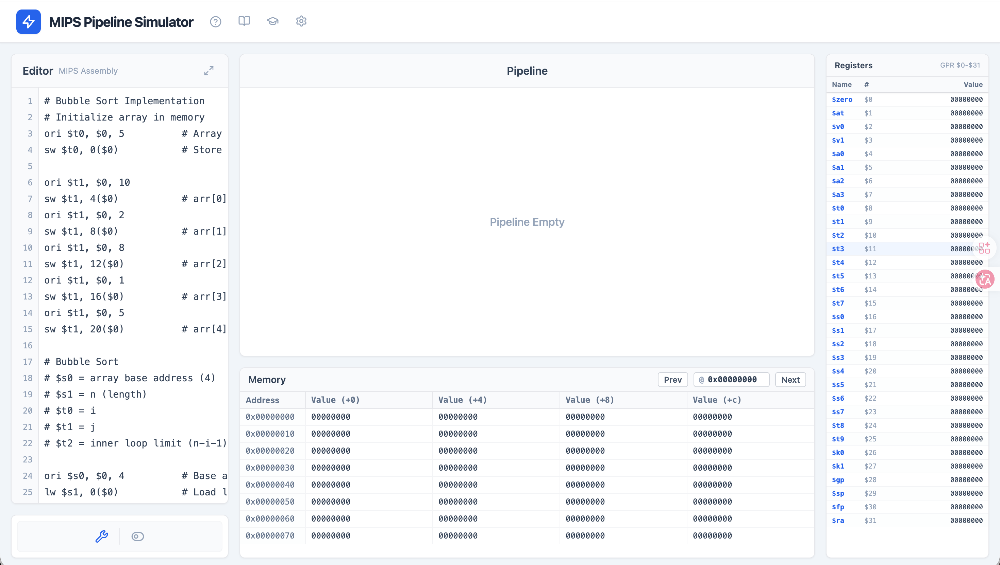
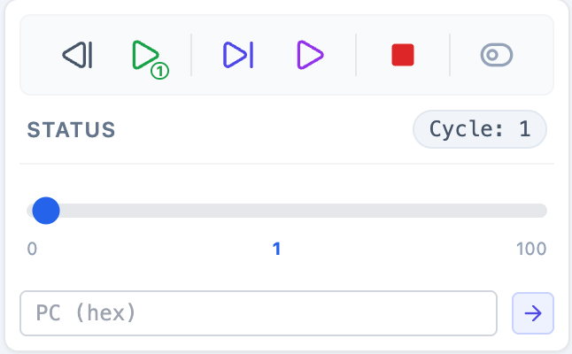
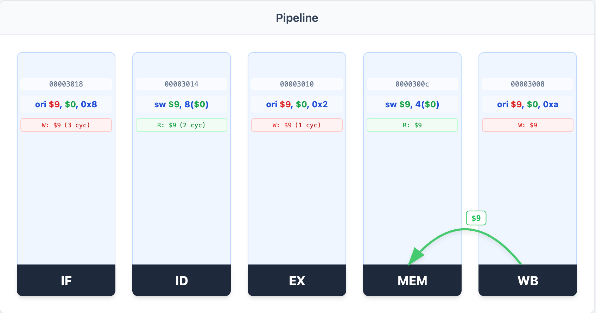
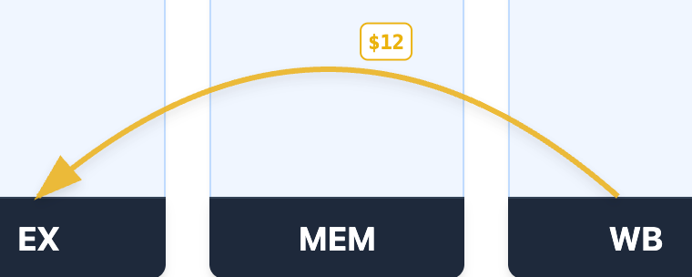
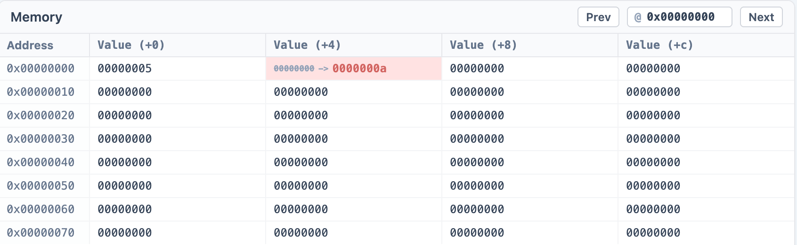

MIPS Pipeline Simulator 使用指南
概览
MIPS Pipeline Simulator 是一个交互式的 MIPS 五级流水线 CPU 模拟器，用于学习和理解流水线处理器的工作原理。模拟器支持：
- 流水线可视化：IF、ID、EX、MEM、WB
- 数据转发、暂停可视化：显示流水线各级之间的数据转发路径/暂停逻辑
- 与Mars相同逻辑的控制：支持逐周期执行和回退等，方便调试
- 寄存器与内存实时监控：实时显示寄存器和内存的变化
界面布局
模拟器界面分为以下几个主要区域：
- 左侧：代码编辑器 + 控制面板
- 中间：流水线可视化 + 内存视图
- 右侧：寄存器视图
- 顶部：快捷键提示、功能按钮

代码编辑器
代码编辑器用于编写和加载 MIPS 汇编代码。
功能说明
- 语法高亮：显示行号，当前执行行高亮
- 当前指令追踪：正在执行的指令会被黄色高亮标记
- 自动滚动：当代码执行时，编辑器会自动滚动到当前行
- 全屏模式：点击右上角的全屏按钮可放大编辑器
使用方法
- 在编辑器中输入 MIPS 汇编代码
- 点击控制面板中的 Assemble
按钮(或F6)进行汇编
- 汇编成功后，编辑器将锁定（只读），当前指令行会被高亮
- 执行过程中，编辑器会自动跟踪当前执行的指令
示例代码
编辑器默认包含一个冒泡排序的实现示例：
# Bubble Sort Implementation
# Initialize array in memory
ori $t0, $0, 5 # Array length
sw $t0, 0($0) # Store length at 0x0
ori $t1, $0, 10
sw $t1, 4($0) # arr[0] = 10
# ... more initialization
outer_loop:
# Bubble sort logic
# ...
键盘快捷键
控制面板
控制面板提供模拟器的执行控制功能。

按钮功能
汇编前
| 按钮 |
快捷键 |
说明 |
| Assemble
|
F6 |
汇编当前代码并初始化模拟器 |
汇编后
| 按钮 |
快捷键 |
说明 |
| Step Back
|
F11 |
回退到上一个时钟周期 |
| Step Forward
1
|
F10 |
前进一个时钟周期 |
| Continue
|
F5 |
跳转到本次模拟已执行的最远位置 |
| Run
|
- |
连续运行直到程序结束 |
| Stop
|
Esc |
停止执行，重置状态 |
注：Continue按钮使用：当使用 Step Back 回退查看之前的周期，或使用周期滑块跳转到历史周期后，点击 Continue 可以快速跳回到模拟器已执行到的最远位置(即当次模拟的"最新"状态)
周期导航
- 周期滑块：拖动滑块可以快速跳转到指定的时钟周期
- 周期计数器：显示当前所处的时钟周期数
显示模式切换
控制面板右侧有一个模式切换按钮
/
：
- 简单模式：显示剩余周期数
- 详细模式：用于深入理解流水线时序
流水线
流水线可视化区域展示五级流水线的当前状态，是理解流水线工作原理的核心区域。

五级流水线阶段
| 阶段 |
名称 |
功能 |
| IF |
Instruction Fetch |
从内存读取指令 |
| ID |
Instruction Decode |
解析指令，读取寄存器 |
| EX |
Execute |
ALU 运算或地址计算 |
| MEM |
Memory Access |
读取或写入内存 |
| WB |
Write Back |
将结果写入寄存器 |
流水线阶段显示内容
每个流水线阶段显示以下信息：
- PC 地址：当前指令的 PC 值（顶部小字）
- 指令内容：当前执行的指令（中间大字）
- 写寄存器 (W)：该指令将要写入的寄存器（红色标记）
- 读寄存器 (R)：该指令需要读取的寄存器（绿色标记）
- 状态标记：
- STALL：流水线暂停（红色背景）
- BUBBLE：流水线气泡（黄色背景）
数据转发可视化
模拟器会自动显示数据转发路径，使用不同颜色的曲线表示：
| 颜色 |
转发目标 |
说明 |
| 蓝色 |
→ ID |
转发到译码阶段 |
| 黄色 |
→ EX |
转发到执行阶段 |
| 绿色 |
→ MEM |
转发到访存阶段 |
转发线上会标注被转发的寄存器编号

冒险处理说明
模拟器自动处理以下数据冒险：
- RAW冒险：
- 通过数据转发解决大部分 RAW 冒险
- Load-Use 冒险会触发 STALL
- 控制冒险：
- 分支指令会在 ID 阶段判断跳转条件
- 使用延迟槽技术
内存与寄存器视图
寄存器视图
寄存器视图显示所有 32 个通用寄存器（GPR）的当前值。
寄存器列表
| 编号 |
名称 |
用途 |
| $0 |
$zero |
常量 0 |
| $1 |
$at |
汇编器临时寄存器 |
| $2-$3 |
$v0-$v1 |
函数返回值 |
| $4-$7 |
$a0-$a3 |
函数参数 |
| $8-$15 |
$t0-$t7 |
临时寄存器 |
| $16-$23 |
$s0-$s7 |
保存寄存器 |
| $24-$25 |
$t8-$t9 |
更多临时寄存器 |
| $26-$27 |
$k0-$k1 |
内核保留 |
| $28 |
$gp |
全局指针 |
| $29 |
$sp |
栈指针 |
| $30 |
$fp |
帧指针 |
| $31 |
$ra |
返回地址 |
显示说明
- 红色背景：该寄存器在本周期被写入
- 变化动画：显示值从旧值变为新值的过程
- 自动滚动：当寄存器被写入时，视图会自动滚动到该寄存器
内存视图
内存视图显示内存中的数据内容，以十六进制格式呈现。

功能说明
- 地址导航：
- 在地址输入框中输入起始地址（十六进制）
- 点击 Prev 向前翻页（-128 字节）
- 点击 Next 向后翻页（+128 字节）
- 数据显示：
- 每行显示 4 个字
- 格式：地址 | +0 | +4 | +8 | +c
- 变化标记：
- 红色背景：该内存位置在本周期被写入
- 变化动画：显示值从旧值变为新值的过程
扩展功能
指令参考手册
点击顶部的书本图标
可打开指令参考手册，包含：
- Tuse / Tnew 概念解释：
- Tuse：源操作数被使用的时刻（距离当前还需多少周期）
- Tuse = 0：在 D 阶段使用
- Tuse = 1：在 E 阶段使用
- Tuse = 2：在 M 阶段使用
- Tnew：结果产生的时刻（结果在哪个阶段准备好）
- Tnew = E：在 E 阶段产生
- Tnew = M：在 M 阶段产生
- Tnew = W：在 W 阶段产生
- 支持的指令列表：
- 算术指令：add, sub, addi 等
- 逻辑指令：ori, and, or, lui 等
- 访存指令：lw, sw 等
- 分支跳转指令：beq, bne, j, jal, jr 等
Quiz模式
点击顶部的学士帽图标
可进入测验模式，用于测试对 Tuse/Tnew 的理解：
- 系统会随机显示指令
- 用户需要选择正确的 Tuse(rs)、Tuse(rt) 和 Tnew 值
- 答对得分，答错显示正确答案
- 完成所有题目后显示总分
使用流程
- 编写代码：在编辑器中输入 MIPS 汇编代码
- 汇编加载：点击 Assemble 按钮或按 F6
- 单步执行：使用 Step Forward 按钮或按 F10 逐周期执行
- 观察流水线：观察各级流水线的变化和数据转发
- 检查状态：查看寄存器和内存的变化
- 回退调试：使用 Step Back 按钮或按 F11 回退分析
- 快速定位：使用周期滑块或 PC 跳转快速定位到特定时刻
MIPS Pipeline Simulator